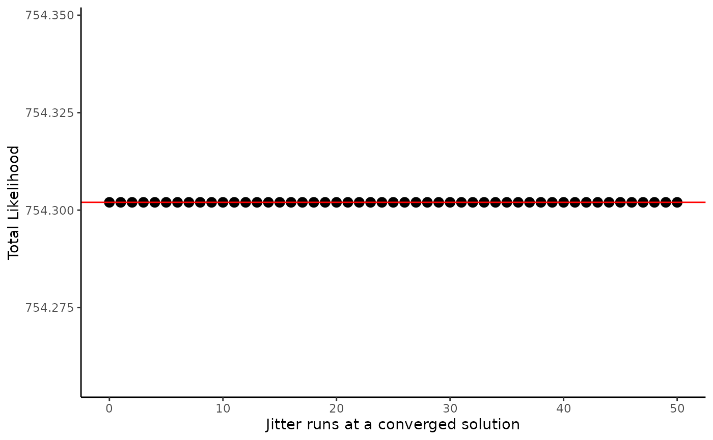
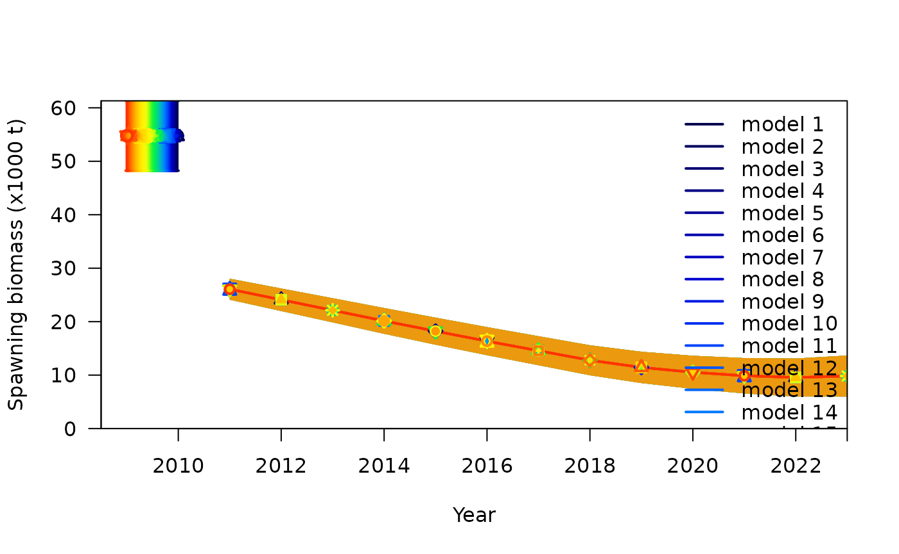

Jitter analyses are commonly implemented in Stock Synthesis to ensure
a model has reached global convergence. Jitter involves changing the
parameter start values by a small increment and rerunning the model to
see if that adjustment causes the model to converge at a lower
likelihood. This can be useful for distinguishing if a model reached a
local minimum or a global minimum. The number of jitter iterations
should be anywhere between 50-100 to ensure a good spread of start
values. If any of those runs has a lower likelihood than your current
model, parameter start values should be adjusted to use those from the
run with a lower likelihood. You can do this by adjusting the values in
the control.ss file to match those in the
ss.par_#_of_the_lower_likelihood_run. We provide the steps for running
jitter analysis using r4ss::jitter() below.
Model inputs
To run a Stock Synthesis model, four input files are required:
starter.ss, forecast.ss, control.ss, and data.ss. The input files for
the example model can be found within the ss3diags package
and accessed as shown below. Also, if you do not have the
r4ss package installed, you will need to install it for
this tutorial.
install_github("r4ss/r4ss")
library(r4ss)
files_path <- system.file("extdata", package = "ss3diags")
dir_jitter <- file.path(tempdir(check = TRUE), "jitter")
dir.create(dir_jitter, showWarnings = FALSE, recursive = TRUE)
list.files(files_path)
#> [1] "control.ss" "data.ss" "forecast.ss" "starter.ss"
file.copy(from = list.files(files_path, full.names = TRUE), to = dir_jitter)
#> [1] TRUE TRUE TRUE TRUEYou will need to make sure you have the SS
executable file either in your path or in the directory you are
running the retrospective from (in this case dir_jitter).
An easy way to get the latest release of stock synthesis is to use the
r4ss function get_ss3_exe().
r4ss::get_ss3_exe(dir = dir_jitter)
#> The stock synthesis executable for Linux v3.30.23.1 was downloaded to: /tmp/RtmpjoudGu/jitter/ss3We will run the model in dir_jitter first to produce the
necessary output files. It is recommended to do jitter runs in a
subdirectory of your model run. This will keep all of the output files
separate from other diagnostic tests you may run.
r4ss::run(dir = dir_jitter, exe = "ss3", verbose = FALSE)
#> [1] "ran model"Jitter
For this example, we will run 50 jitters. The jitter()
function automates the entire process so you only need to give it a few
arguments and it will run and produce the total likelihoods for each
run. Full documentation of the jitter() function can be
found at the r4ss
website.
Njitter <- 50
jit.likes <- r4ss::jitter(
dir = dir_jitter,
Njitter = Njitter,
init_values_src = 1,
jitter_fraction = 0.1,
exe = "ss3",
printlikes = FALSE,
verbose = FALSE
)To analyze the output of all 50 runs, use
r4ss::SSgetoutput() and r4ss::SSsummarize() as
shown below.
jit_mods <- SSgetoutput(
keyvec = 0:Njitter, # 0 to include reference run (Report0.sso)
getcomp = FALSE,
dirvec = dir_jitter,
getcovar = FALSE,
verbose = FALSE
)
jit_summary <- SSsummarize(jit_mods, verbose = FALSE)Some key sections you may want to check and compare across models are, likelihoods, derived quantities, and estimated parameters.
head(jit_summary$likelihoods)
#> replist0 replist1 replist2 replist3 replist4 replist5
#> 1 7.54302e+02 7.54302e+02 7.54302e+02 7.54302e+02 7.54302e+02 7.54302e+02
#> 2 1.33479e-10 1.33479e-10 1.33479e-10 1.33479e-10 1.33479e-10 1.33479e-10
#> 3 1.74852e-01 1.74852e-01 1.74852e-01 1.74852e-01 1.74852e-01 1.74852e-01
#> 4 -7.11813e+00 -7.11813e+00 -7.11813e+00 -7.11813e+00 -7.11813e+00 -7.11813e+00
#> 5 3.66756e+02 3.66756e+02 3.66756e+02 3.66756e+02 3.66756e+02 3.66756e+02
#> 6 2.31845e+02 2.31845e+02 2.31845e+02 2.31845e+02 2.31845e+02 2.31845e+02
#> replist6 replist7 replist8 replist9 replist10 replist11
#> 1 7.54302e+02 7.54302e+02 7.54302e+02 7.54302e+02 7.54302e+02 7.54302e+02
#> 2 1.33479e-10 1.33479e-10 1.33479e-10 1.33479e-10 1.33479e-10 1.33479e-10
#> 3 1.74852e-01 1.74852e-01 1.74852e-01 1.74852e-01 1.74852e-01 1.74852e-01
#> 4 -7.11813e+00 -7.11813e+00 -7.11813e+00 -7.11813e+00 -7.11813e+00 -7.11813e+00
#> 5 3.66756e+02 3.66756e+02 3.66756e+02 3.66756e+02 3.66756e+02 3.66756e+02
#> 6 2.31845e+02 2.31845e+02 2.31845e+02 2.31845e+02 2.31845e+02 2.31845e+02
#> replist12 replist13 replist14 replist15 replist16 replist17
#> 1 7.54302e+02 7.54302e+02 7.54302e+02 7.54302e+02 7.54302e+02 7.54302e+02
#> 2 1.33479e-10 1.33479e-10 1.33479e-10 1.33479e-10 1.33479e-10 1.33479e-10
#> 3 1.74852e-01 1.74852e-01 1.74852e-01 1.74852e-01 1.74852e-01 1.74852e-01
#> 4 -7.11813e+00 -7.11813e+00 -7.11813e+00 -7.11813e+00 -7.11813e+00 -7.11813e+00
#> 5 3.66756e+02 3.66756e+02 3.66756e+02 3.66756e+02 3.66756e+02 3.66756e+02
#> 6 2.31845e+02 2.31845e+02 2.31845e+02 2.31845e+02 2.31845e+02 2.31845e+02
#> replist18 replist19 replist20 replist21 replist22 replist23
#> 1 7.54302e+02 7.54302e+02 7.54302e+02 7.54302e+02 7.54302e+02 7.54302e+02
#> 2 1.33479e-10 1.33479e-10 1.33479e-10 1.33479e-10 1.33479e-10 1.33479e-10
#> 3 1.74852e-01 1.74852e-01 1.74852e-01 1.74852e-01 1.74852e-01 1.74852e-01
#> 4 -7.11813e+00 -7.11813e+00 -7.11813e+00 -7.11813e+00 -7.11813e+00 -7.11813e+00
#> 5 3.66756e+02 3.66756e+02 3.66756e+02 3.66756e+02 3.66756e+02 3.66756e+02
#> 6 2.31845e+02 2.31845e+02 2.31845e+02 2.31845e+02 2.31845e+02 2.31845e+02
#> replist24 replist25 replist26 replist27 replist28 replist29
#> 1 7.54302e+02 7.54302e+02 7.54302e+02 7.54302e+02 7.54302e+02 7.54302e+02
#> 2 1.33479e-10 1.33479e-10 1.33479e-10 1.33479e-10 1.33479e-10 1.33479e-10
#> 3 1.74852e-01 1.74852e-01 1.74852e-01 1.74852e-01 1.74852e-01 1.74852e-01
#> 4 -7.11813e+00 -7.11813e+00 -7.11813e+00 -7.11813e+00 -7.11813e+00 -7.11813e+00
#> 5 3.66756e+02 3.66756e+02 3.66756e+02 3.66756e+02 3.66756e+02 3.66756e+02
#> 6 2.31845e+02 2.31845e+02 2.31845e+02 2.31845e+02 2.31845e+02 2.31845e+02
#> replist30 replist31 replist32 replist33 replist34 replist35
#> 1 7.54302e+02 7.54302e+02 7.54302e+02 7.54302e+02 7.54302e+02 7.54302e+02
#> 2 1.33479e-10 1.33479e-10 1.33479e-10 1.33479e-10 1.33479e-10 1.33479e-10
#> 3 1.74852e-01 1.74852e-01 1.74852e-01 1.74852e-01 1.74852e-01 1.74852e-01
#> 4 -7.11813e+00 -7.11813e+00 -7.11813e+00 -7.11813e+00 -7.11813e+00 -7.11813e+00
#> 5 3.66756e+02 3.66756e+02 3.66756e+02 3.66756e+02 3.66756e+02 3.66756e+02
#> 6 2.31845e+02 2.31845e+02 2.31845e+02 2.31845e+02 2.31845e+02 2.31845e+02
#> replist36 replist37 replist38 replist39 replist40 replist41
#> 1 7.54302e+02 7.54302e+02 7.54302e+02 7.54302e+02 7.54302e+02 7.54302e+02
#> 2 1.33479e-10 1.33479e-10 1.33479e-10 1.33479e-10 1.33479e-10 1.33479e-10
#> 3 1.74852e-01 1.74852e-01 1.74852e-01 1.74852e-01 1.74852e-01 1.74852e-01
#> 4 -7.11813e+00 -7.11813e+00 -7.11813e+00 -7.11813e+00 -7.11813e+00 -7.11813e+00
#> 5 3.66756e+02 3.66756e+02 3.66756e+02 3.66756e+02 3.66756e+02 3.66756e+02
#> 6 2.31845e+02 2.31845e+02 2.31845e+02 2.31845e+02 2.31845e+02 2.31845e+02
#> replist42 replist43 replist44 replist45 replist46 replist47
#> 1 7.54302e+02 7.54302e+02 7.54302e+02 7.54302e+02 7.54302e+02 7.54302e+02
#> 2 1.33479e-10 1.33479e-10 1.33479e-10 1.33479e-10 1.33479e-10 1.33479e-10
#> 3 1.74852e-01 1.74852e-01 1.74852e-01 1.74852e-01 1.74852e-01 1.74852e-01
#> 4 -7.11813e+00 -7.11813e+00 -7.11813e+00 -7.11813e+00 -7.11813e+00 -7.11813e+00
#> 5 3.66756e+02 3.66756e+02 3.66756e+02 3.66756e+02 3.66756e+02 3.66756e+02
#> 6 2.31845e+02 2.31845e+02 2.31845e+02 2.31845e+02 2.31845e+02 2.31845e+02
#> replist48 replist49 replist50 Label
#> 1 7.54302e+02 7.54302e+02 7.54302e+02 TOTAL
#> 2 1.33479e-10 1.33479e-10 1.33479e-10 Catch
#> 3 1.74852e-01 1.74852e-01 1.74852e-01 Equil_catch
#> 4 -7.11813e+00 -7.11813e+00 -7.11813e+00 Survey
#> 5 3.66756e+02 3.66756e+02 3.66756e+02 Length_comp
#> 6 2.31845e+02 2.31845e+02 2.31845e+02 Age_comp
head(jit_summary$quants)
#> replist0 replist1 replist2 replist3 replist4 replist5 replist6 replist7
#> 1 54773.8 54773.8 54773.8 54773.8 54773.8 54773.8 54773.8 54773.8
#> 2 26071.4 26071.4 26071.4 26071.4 26071.4 26071.4 26071.4 26071.4
#> 3 26071.4 26071.4 26071.4 26071.4 26071.4 26071.4 26071.4 26071.4
#> 4 24096.1 24096.1 24096.1 24096.1 24096.1 24096.1 24096.1 24096.1
#> 5 22126.1 22126.1 22126.1 22126.1 22126.1 22126.1 22126.1 22126.1
#> 6 20143.5 20143.5 20143.5 20143.5 20143.5 20143.5 20143.5 20143.5
#> replist8 replist9 replist10 replist11 replist12 replist13 replist14 replist15
#> 1 54773.8 54773.8 54773.8 54773.8 54773.8 54773.8 54773.8 54773.8
#> 2 26071.4 26071.4 26071.4 26071.4 26071.4 26071.4 26071.4 26071.4
#> 3 26071.4 26071.4 26071.4 26071.4 26071.4 26071.4 26071.4 26071.4
#> 4 24096.1 24096.1 24096.1 24096.1 24096.1 24096.1 24096.1 24096.1
#> 5 22126.1 22126.1 22126.1 22126.1 22126.1 22126.1 22126.1 22126.1
#> 6 20143.5 20143.5 20143.5 20143.5 20143.5 20143.5 20143.5 20143.5
#> replist16 replist17 replist18 replist19 replist20 replist21 replist22
#> 1 54773.8 54773.8 54773.8 54773.8 54773.8 54773.8 54773.8
#> 2 26071.4 26071.4 26071.4 26071.4 26071.4 26071.4 26071.4
#> 3 26071.4 26071.4 26071.4 26071.4 26071.4 26071.4 26071.4
#> 4 24096.1 24096.1 24096.1 24096.1 24096.1 24096.1 24096.1
#> 5 22126.1 22126.1 22126.1 22126.1 22126.1 22126.1 22126.1
#> 6 20143.5 20143.5 20143.5 20143.5 20143.5 20143.5 20143.5
#> replist23 replist24 replist25 replist26 replist27 replist28 replist29
#> 1 54773.8 54773.8 54773.8 54773.8 54773.8 54773.8 54773.8
#> 2 26071.4 26071.4 26071.4 26071.4 26071.4 26071.4 26071.4
#> 3 26071.4 26071.4 26071.4 26071.4 26071.4 26071.4 26071.4
#> 4 24096.1 24096.1 24096.1 24096.1 24096.1 24096.1 24096.1
#> 5 22126.1 22126.1 22126.1 22126.1 22126.1 22126.1 22126.1
#> 6 20143.5 20143.5 20143.5 20143.5 20143.5 20143.5 20143.5
#> replist30 replist31 replist32 replist33 replist34 replist35 replist36
#> 1 54773.8 54773.8 54773.8 54773.8 54773.8 54773.8 54773.8
#> 2 26071.4 26071.4 26071.4 26071.4 26071.4 26071.4 26071.4
#> 3 26071.4 26071.4 26071.4 26071.4 26071.4 26071.4 26071.4
#> 4 24096.1 24096.1 24096.1 24096.1 24096.1 24096.1 24096.1
#> 5 22126.1 22126.1 22126.1 22126.1 22126.1 22126.1 22126.1
#> 6 20143.5 20143.5 20143.5 20143.5 20143.5 20143.5 20143.5
#> replist37 replist38 replist39 replist40 replist41 replist42 replist43
#> 1 54773.8 54773.8 54773.8 54773.8 54773.8 54773.8 54773.8
#> 2 26071.4 26071.4 26071.4 26071.4 26071.4 26071.4 26071.4
#> 3 26071.4 26071.4 26071.4 26071.4 26071.4 26071.4 26071.4
#> 4 24096.1 24096.1 24096.1 24096.1 24096.1 24096.1 24096.1
#> 5 22126.1 22126.1 22126.1 22126.1 22126.1 22126.1 22126.1
#> 6 20143.5 20143.5 20143.5 20143.5 20143.5 20143.5 20143.5
#> replist44 replist45 replist46 replist47 replist48 replist49 replist50
#> 1 54773.8 54773.8 54773.8 54773.8 54773.8 54773.8 54773.8
#> 2 26071.4 26071.4 26071.4 26071.4 26071.4 26071.4 26071.4
#> 3 26071.4 26071.4 26071.4 26071.4 26071.4 26071.4 26071.4
#> 4 24096.1 24096.1 24096.1 24096.1 24096.1 24096.1 24096.1
#> 5 22126.1 22126.1 22126.1 22126.1 22126.1 22126.1 22126.1
#> 6 20143.5 20143.5 20143.5 20143.5 20143.5 20143.5 20143.5
#> Label Yr
#> 1 SSB_Virgin NA
#> 2 SSB_Initial NA
#> 3 SSB_2011 2011
#> 4 SSB_2012 2012
#> 5 SSB_2013 2013
#> 6 SSB_2014 2014
head(jit_summary$pars)
#> replist0 replist1 replist2 replist3 replist4 replist5 replist6
#> 1 0.100000 0.100000 0.100000 0.100000 0.100000 0.100000 0.100000
#> 2 22.769000 22.769000 22.769000 22.769000 22.769000 22.769000 22.769000
#> 3 71.807200 71.807200 71.807200 71.807200 71.807200 71.807200 71.807200
#> 4 0.142165 0.142165 0.142165 0.142165 0.142165 0.142165 0.142165
#> 5 0.100000 0.100000 0.100000 0.100000 0.100000 0.100000 0.100000
#> 6 0.100000 0.100000 0.100000 0.100000 0.100000 0.100000 0.100000
#> replist7 replist8 replist9 replist10 replist11 replist12 replist13
#> 1 0.100000 0.100000 0.100000 0.100000 0.100000 0.100000 0.100000
#> 2 22.769000 22.769000 22.769000 22.769000 22.769000 22.769000 22.769000
#> 3 71.807200 71.807200 71.807200 71.807200 71.807200 71.807200 71.807200
#> 4 0.142165 0.142165 0.142165 0.142165 0.142165 0.142165 0.142165
#> 5 0.100000 0.100000 0.100000 0.100000 0.100000 0.100000 0.100000
#> 6 0.100000 0.100000 0.100000 0.100000 0.100000 0.100000 0.100000
#> replist14 replist15 replist16 replist17 replist18 replist19 replist20
#> 1 0.100000 0.100000 0.100000 0.100000 0.100000 0.100000 0.100000
#> 2 22.769000 22.769000 22.769000 22.769000 22.769000 22.769000 22.769000
#> 3 71.807200 71.807200 71.807200 71.807200 71.807200 71.807200 71.807200
#> 4 0.142165 0.142165 0.142165 0.142165 0.142165 0.142165 0.142165
#> 5 0.100000 0.100000 0.100000 0.100000 0.100000 0.100000 0.100000
#> 6 0.100000 0.100000 0.100000 0.100000 0.100000 0.100000 0.100000
#> replist21 replist22 replist23 replist24 replist25 replist26 replist27
#> 1 0.100000 0.100000 0.100000 0.100000 0.100000 0.100000 0.100000
#> 2 22.769000 22.769000 22.769000 22.769000 22.769000 22.769000 22.769000
#> 3 71.807200 71.807200 71.807200 71.807200 71.807200 71.807200 71.807200
#> 4 0.142165 0.142165 0.142165 0.142165 0.142165 0.142165 0.142165
#> 5 0.100000 0.100000 0.100000 0.100000 0.100000 0.100000 0.100000
#> 6 0.100000 0.100000 0.100000 0.100000 0.100000 0.100000 0.100000
#> replist28 replist29 replist30 replist31 replist32 replist33 replist34
#> 1 0.100000 0.100000 0.100000 0.100000 0.100000 0.100000 0.100000
#> 2 22.769000 22.769000 22.769000 22.769000 22.769000 22.769000 22.769000
#> 3 71.807200 71.807200 71.807200 71.807200 71.807200 71.807200 71.807200
#> 4 0.142165 0.142165 0.142165 0.142165 0.142165 0.142165 0.142165
#> 5 0.100000 0.100000 0.100000 0.100000 0.100000 0.100000 0.100000
#> 6 0.100000 0.100000 0.100000 0.100000 0.100000 0.100000 0.100000
#> replist35 replist36 replist37 replist38 replist39 replist40 replist41
#> 1 0.100000 0.100000 0.100000 0.100000 0.100000 0.100000 0.100000
#> 2 22.769000 22.769000 22.769000 22.769000 22.769000 22.769000 22.769000
#> 3 71.807200 71.807200 71.807200 71.807200 71.807200 71.807200 71.807200
#> 4 0.142165 0.142165 0.142165 0.142165 0.142165 0.142165 0.142165
#> 5 0.100000 0.100000 0.100000 0.100000 0.100000 0.100000 0.100000
#> 6 0.100000 0.100000 0.100000 0.100000 0.100000 0.100000 0.100000
#> replist42 replist43 replist44 replist45 replist46 replist47 replist48
#> 1 0.100000 0.100000 0.100000 0.100000 0.100000 0.100000 0.100000
#> 2 22.769000 22.769000 22.769000 22.769000 22.769000 22.769000 22.769000
#> 3 71.807200 71.807200 71.807200 71.807200 71.807200 71.807200 71.807200
#> 4 0.142165 0.142165 0.142165 0.142165 0.142165 0.142165 0.142165
#> 5 0.100000 0.100000 0.100000 0.100000 0.100000 0.100000 0.100000
#> 6 0.100000 0.100000 0.100000 0.100000 0.100000 0.100000 0.100000
#> replist49 replist50 Label Yr recdev
#> 1 0.100000 0.100000 NatM_uniform_Fem_GP_1 NA FALSE
#> 2 22.769000 22.769000 L_at_Amin_Fem_GP_1 NA FALSE
#> 3 71.807200 71.807200 L_at_Amax_Fem_GP_1 NA FALSE
#> 4 0.142165 0.142165 VonBert_K_Fem_GP_1 NA FALSE
#> 5 0.100000 0.100000 CV_young_Fem_GP_1 NA FALSE
#> 6 0.100000 0.100000 CV_old_Fem_GP_1 NA FALSEYou may also want to check that the models converged. To do this you can check the maximum gradients to make sure they are all small (< 0.0001). You can also compare the estimated spawning biomass, if they are extreme values (+2x or <0.5x the base spawning biomass) this suggests the model didn’t converge.
# Maximum gradient
converged_grad <- which(jit_summary$maxgrad < 0.0001)
converged_ssb <- jit_summary$SpawnBio |>
dplyr::mutate(across(c(1:(Njitter + 1)),
.fns = ~ . / replist0
)) |> # for each column, divide SSB by SSB from the reference run (replist)
dplyr::select(-Label) |>
tidyr::pivot_longer(col = c(1:(Njitter + 1)), names_to = "jitter", values_to = "SSB") |>
tidyr::pivot_wider(names_from = Yr, values_from = SSB) |>
dplyr::mutate(rownumber = seq(1, dplyr::n())) |>
tibble::column_to_rownames("rownumber") |>
dplyr::select(-jitter) |>
dplyr:: filter(across(everything(), ~ . >= 0.5 & . <= 2)) |> # keep only rows where SSB is a reasonable value
tibble::rownames_to_column("rownumber") |>
dplyr::select(rownumber) |>
dplyr::pull(rownumber)
#> Warning: Using `across()` in `filter()` was deprecated in dplyr 1.0.8.
#> ℹ Please use `if_any()` or `if_all()` instead.
#> Call `lifecycle::last_lifecycle_warnings()` to see where this warning was
#> generated.
converged_mods <- intersect(converged_grad, as.numeric(converged_ssb)) # getting which models are in both groups
converged_jitters <- jit_mods[converged_grad]
converged_sum <- SSsummarize(converged_jitters, verbose = FALSE)Visualizing Output
To compare the likelihoods of all runs, we plot them as shown below.
There are no built in functions (as of writing this vignette) in
r4ss or ss3diags to generate a likelihood
plot, therefore we provide code in the tidyverse syntax (using
ggplot2) to visualize the results.
converged_sum$likelihoods |>
filter(str_detect(Label, "TOTAL")) |>
select(-Label) |>
pivot_longer(cols = everything(), names_to = "jitter", values_to = "likelihood") |>
separate(jitter, into = c("replist", "jitter"), sep = "(?<=[A-Za-z])(?=[0-9])") |>
mutate(jitter = as.numeric(jitter)) |>
ggplot(aes(x = jitter, y = likelihood)) +
geom_point(size = 3) +
geom_hline(aes(yintercept = likelihood[1]), color = "red") +
theme_classic() +
labs(
y = "Total Likelihood",
x = "Jitter runs at a converged solution"
)
The figure plots the total likelihood from each jitter run and the
red line indicates the total likelihood value from the reference run. If
there are any runs with points below the red line, use the converged
parameter values from the run with the lowest likelihood value as
starting values in your base model. We can also use
r4ss::SSplotComparisons() to compare the spawning biomass
trajectories between jitter runs to see the impact of different
parameter values on the estimated quantities.
SSplotComparisons(converged_sum,
subplots = 2,
ylimAdj = 1,
new = FALSE
)
#> showing uncertainty for all models
#> subplot 2: spawning biomass with uncertainty intervals